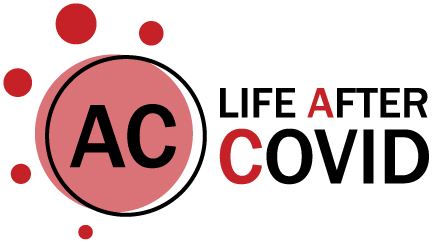

Cook County’s Sizable Vaccination Disparity Remains in Black and Brown Suburbs
Despite allocation of federal funding, vaccines are still hard to get for many.
Cicero Independiente and South Side Weekly
Chicago’s systemic racism reaches beyond its municipal boundaries. Like the West and South sides of Chicago, city-adjacent suburbs are largely composed of Black and brown cash-poor communities that have weathered the COVID-19 pandemic with little resources in health care deserts. These areas are composed of a large number of essential workers who already faced exploitative and unsafe working conditions before the pandemic.
Cook County is the second most populous county in the country, with 5.2 million residents, fifty-nine percent of whom live outside the City of Chicago, and close to fifty percent of them people of color.
In many of these municipalities, local governments have been slow, sometimes unwilling, to respond to changing racial demographics and rarely do they make it easy for non-English speakers to participate in civic life. Past studies have additionally found pharmacy deserts in Black and segregated communities in Chicago that can be reasonably assumed to extend further west and south.
Historically, large industries that emit pollutants into the air and water have received tax breaks and other benefits to attract them to set up shop in these areas. These industries have also driven in- and out-migration to these towns. For generations, heavy industry has made residents vulnerable to chronic health conditions, like asthma, that increase the risk of developing a severe case of COVID.
Cook County’s stated goal is to vaccinate at least eighty percent of all its residents. In April 2020, officials received $428.6 million in COVID funding from the CARES Act. They established a subcommittee specifically for the redistribution of federal funds and distributed $51 million of the relief among over 300 units of government.
Last March, the Cook County Department of Public Health announced that thirty-two west and south suburbs of Cook County would be the focus of the County’s vaccination equity efforts. Cicero, Berwyn, Harvey, Dolton, Calumet City, and Blue Island received the highest amounts of federal aid.
Three months later, vaccination rates in at least seven of those communities, all of which are predominantly Black and Latinx suburbs, still lag far behind Cook County’s whiter, more affluent suburbs. The gap in average vaccination rates between these seven suburbs and the rest of suburban Cook County widened from one percentage point at the end of January to nearly ten percentage points in May. This difference has since diminished slightly (from 9.8 to 8.9 percentage points), a sizable gap still remains.
In mid-March, Cook County opened five mass vaccination sites, including one at South Suburban College. On March 31, the majority of essential workers in Cook County became eligible for the vaccine.
While forty-seven percent of Cook County’s population has been fully vaccinated by now, an analysis by the Weekly and Cicero Independiente shows that vaccination rates in seven suburbs—Blue Island, Calumet City, Dolton, and Harvey to the south; and Berwyn, Cicero, and Maywood to the west—where a majority of the population are people of color, range from twenty-two to forty-four percent; and the vaccines took relatively long to come by.
The Chicago Metropolitan Agency for Planning estimates that many of the census tracts in these suburbs have a high percentage of essential workers.

Residents and community advocates in these areas highlight similar barriers: a general lack of health care, exploitative workplace practices that make it difficult to take any sick time off, a lack of assistance in languages other than English, and general disinvestment in these areas that result in residents having to travel for miles to access basic needs.
For months Cicero has remained as the suburb with the highest number of confirmed COVID-19 cases in Cook County, including an early outbreak at a large nursing home. In late April, only twenty-three percent of Cicero’s population was fully vaccinated.
More than one million dollars in CARES Act funds were allocated to the Town of Cicero, and Cicero Independiente recently found that one hundred percent of the COVID-19 funds were given to the police department. Moreover, forty-two percent of the federal funding allocated to the entire county went towards covering labor costs for the Cook County sheriff’s office.
Today 39.2 percent of Cicero residents have been fully vaccinated, largely because community-based organizations in the area have since hosted a number of hyperlocal pop-up vaccination clinics and registration drives to address vaccination barriers such as lack of access to technology, language barriers, transportation issues, and limited sites and appointment hours.
In April and May, the County established priority vaccination sites intended for people who live in the thirty-two municipalities they identified as high priority, and later began to allow walk-in vaccinations.
“Hyper-local vaccination sites are part of our overall strategy to remove barriers to vaccine access while recognizing that many people are more comfortable in their community,” said Cook County Health CEO Israel Rocha Jr. in a statement. “Our vaccine strategy has been designed to reach every corner of Cook County.”
In Harvey, a majority-Black city near the southern county limits, only 22.9 percent of the population has been fully vaccinated by mid-June. In Wilmette, a suburb located in the north of Cook County with a similar population size to Harvey, 61.8 percent of residents have been fully vaccinated. Wilmette is eighty-three percent white, according to recent Census data.
“If we're going to move towards recovery, you have to invest in communities that have already been decimated and devastated by structural racism and white supremacy,” said Cook County Board Commissioner Brandon Johnson about what Cook County needs to do in order to address the inequities faced by western and southern Cook County suburbs that had already been divested of resources prior to the pandemic.

This piece is part of a collaboration that includes the Institute for Nonprofit News, The Beacon/KCUR 89.3; Bridge Michigan/Side Effects Public Media; Cicero Independiente/South Side Weekly; Detour Detroit/Planet Detroit/Tostada Magazine; Evanston RoundTable/Growing Community Media; Madison365/Wausau Pilot & Review; and MinnPost/Sahan Journal. The project was made possible by a grant from the Robert Wood Johnson Foundation with additional support from INN's Amplify News Project and the Solutions Journalism Network.